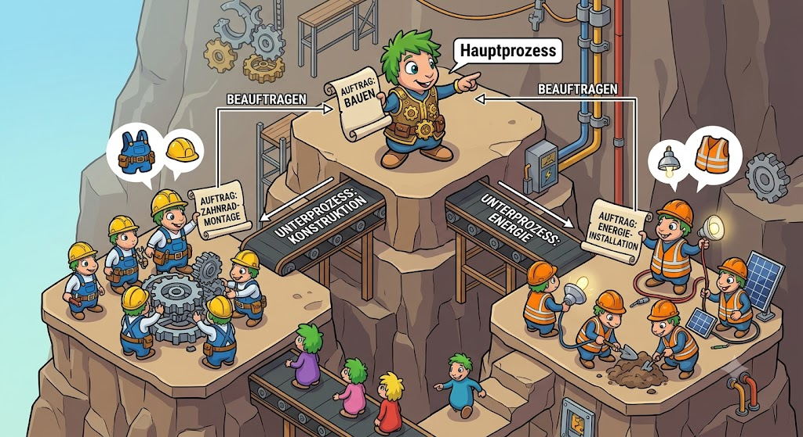

|
<< Click to Display Table of Contents >> Navigation: Programmiermodell > Hintergrundprozesse |

Ein API-Call in der Kategorie "long" oder "memory" sollte trotzdem zügig sein. Synchrone API-Calls mit einer Dauer von mehr als 60 Sekunden sind keine Lösung und es wird zu problematischen Unterbrechnungen in den Anwendungen kommen. Ein Ausweg ist nur die Implementierung einer komfortalen Background-Processing Unit.
Aus Benutzersicht wird der entsprechende Call getätigt, ein Wartedialog erscheint und der Benutzer bekommt Informationen über sein Hintergrundprozess angezeigt:
•Position in der Queue
•Status: Wartend oder Aktiv
•Abarbeitung in Prozentangabe
Für die Abarbeitung muß man also wissen, welcher Benutzer in welcher Session diesen Job durchgeführt hat. Mann kann RabbitMQ für die Kommunikation mit den Clients nutzen (was dieser wieder etwas komplizierter machen). Man könnte also für einfache Prozesse auch einen API-Call anbieten, um den Status eines Prozesses zu erkennen.
Ein Hintergrundprozess ist ein komplizierterer Prozess:
•Der Prozess benötigt eventuell mehrere "Teil"-Commits, um die Arbeit zu erledigen
•Die "Teil"-Commits dürfen die Daten nicht in einem ungültigen Zustand zurücklassen.
•Concurrency-Probleme müssen intern gelöst werden.
•Ein Rollback ist unter Umständen nur schwierig zu programmieren, wenn "Teil"-Commits im Spiel sind.
•Es gibt bestimmte Muster bei Gemstone
oTeilstrukturen werden - nicht erreichbar für Benutzer - aufgebaut und erst beim finalen Commit in den Arbeitsbereich des Benutzer verlegt.
Und ein weiteres Problem: Wenn die Queue der Hintergrundprozesse durch mehrere Gemstone/S Prozesse abgearbeitet werden solleb, könnte man als Benutzer in die Versuchung kommen, durch die UI mehrere Hintergrundprozesse zu starten. Das kann aber zu logischen Problemen führen (Reihenfolge ist nicht mehr gewährleistet).
Also sollte ein Benutzer immer nur einen Hintergrundprozess gleichzeitig starten können und danach kann er nichts mehr weiter machen. Wenn doch, dann muß der Entwickler sehr vorsichtig sein, was er erlaubt.